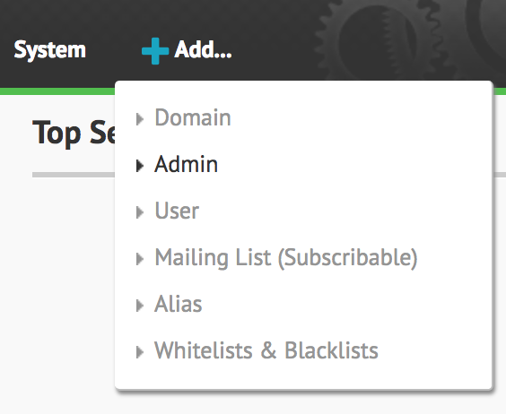
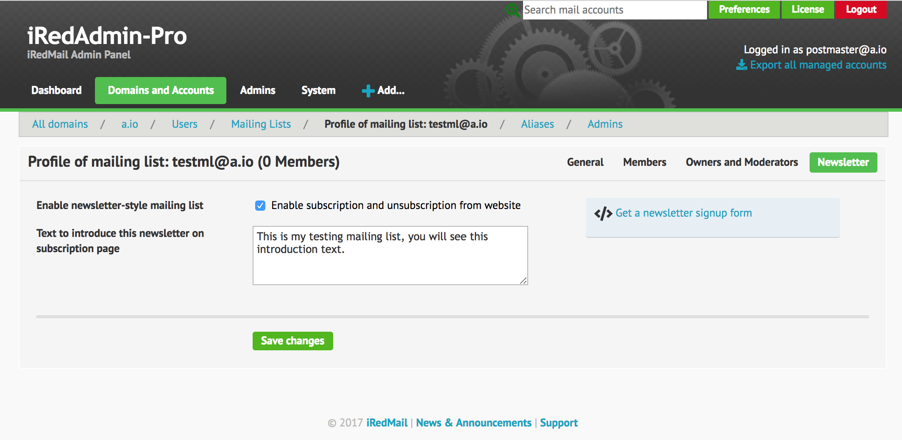
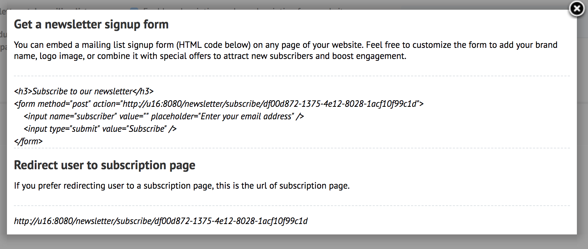
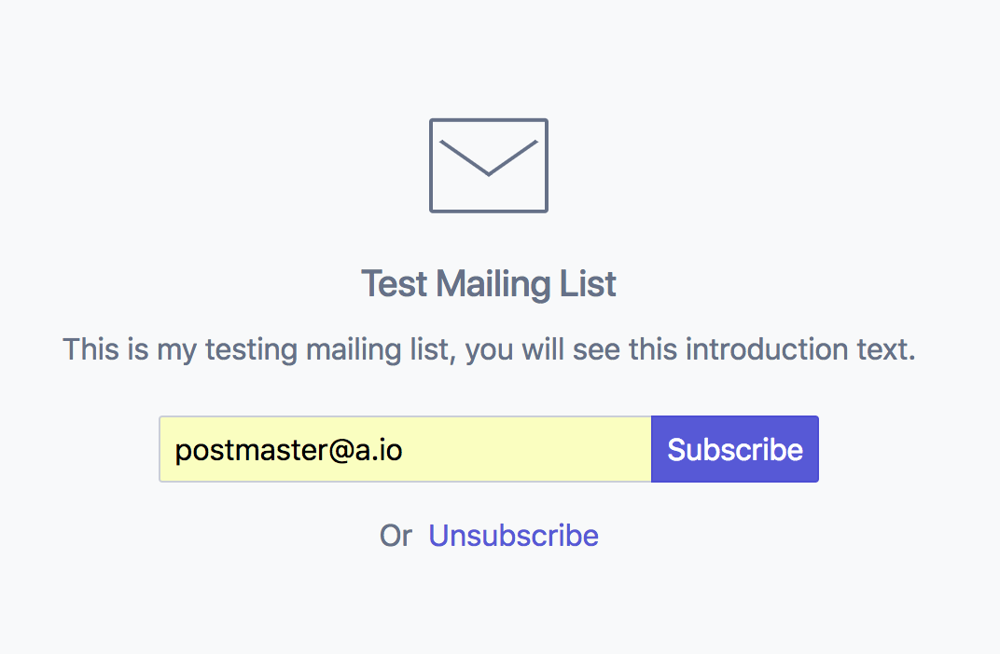
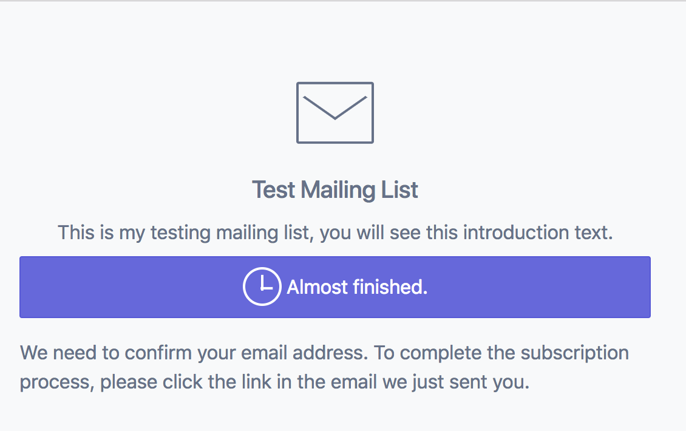
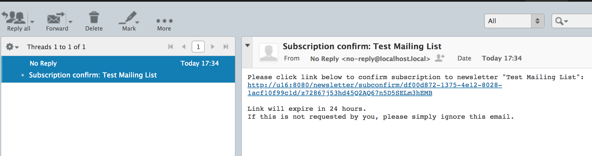
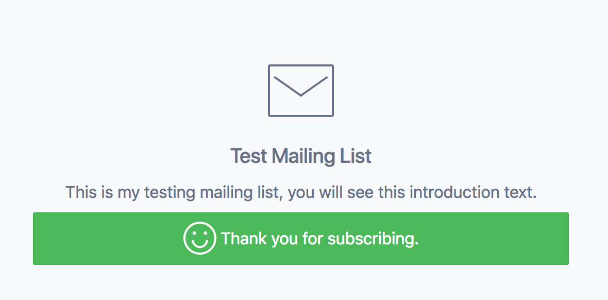
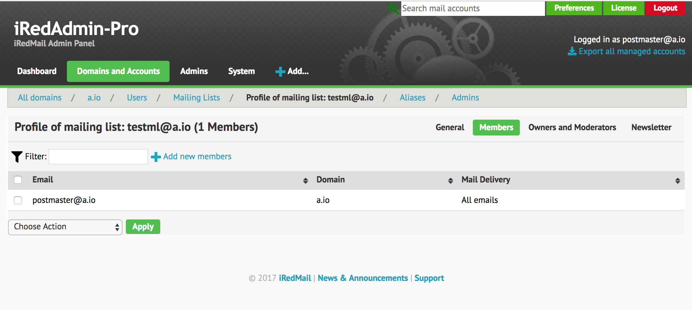

Since iRedMail-0.9.8 and iRedAdmin-Pro-SQL-2.9.0, iRedAdmin-Pro-LDAP-3.1, you can create subscribable mailing list, and allow others to subscribe and unsubscribe from the mailing list.
Login to iRedAdmin-Pro as a domain admin (either global admin or normal domain
admin), click menu on main navigation bar to add a new mailing list:
Add -> Mailing List (subscribable).
While creating, you can control who can send email to this list (of course this option is available after created).

After created mailing list, you will be redirected to its profile page, click
tab Newsletter, you will see page like below.
Please enable option Enable subscription and unsubscription from website,
also optionally, write some text to introduce this mailing list, then save
your changes.

Now click the link Get a newsletter signup form, it will show you sample HTML
code you can embed on any web page of your website, or a simple URL which
redirects user to the subscription page. Feel free to use either one.

If user clicks the url, it will be redirected to the subscription page like below. You can see the mailing list name and introduction text you entered in mailing list profile page.

If user fills his email address and click Subscribe, iRedAdmin-Pro will send
an email to ask for confirm.

The confirm email looks like below in user's mailbox:

After user clicks the link in confirm email, it will be redirected to the subscription confirm page like below.

Now go to mailing list profile page, click tab Members, you will find this
member.

To unsubscribe from a mailing list, user can send an email to
list+unsubscribe@domain.com (with any mail subject and body). Or go to the
subscription web page, click Unsubscribe to unsubscribe.